| [ Team LiB ] |
|
8.1 Introduction to Model-Based ControlIn the previous chapters we focused on techniques to tune PID controllers. The closed-loop oscillation technique developed by Ziegler and Nichols did not require a model of the process. Direct synthesis, however, was based the use of a process model and a desired closed-loop response to synthesize a control law; often this resulted in a controller with a PID structure. In this chapter we develop a model-based procedure, where a process model is "embedded" in the controller. By explicitly using process knowledge, by virtue of the process model, improved performance can be obtained. Consider the stirred-tank heater control problem shown in Figure 8-1. We can use a model of the process to decide the heat flow (Q) that needs to be added to the process to obtain a desired temperature (T) trajectory, specified by the setpoint (Tsp). A simple steady-state energy balance provides the steady-state heat flow needed to obtain a new steady-state temperature, for example. By using a dynamic model, we can also find the time-dependent heat profile needed to yield a particular time-dependent temperature profile. Figure 8-1. Stirred-tank heater.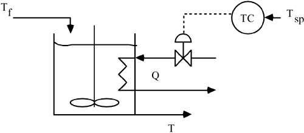 Assume that the chemical process is represented by a linear transfer function model, and that it is open-loop stable. The input-output relationship is shown in Figure 8-2, where u is the input variable (heat flow) and y is the output variable (temperature). Figure 8-2. Open-loop process system.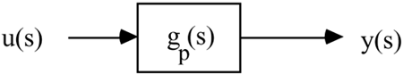 When the process is at steady state, and there are no disturbances, then the inputs and outputs are zero (since we are using deviation variables). Consider a desired change in the output y; we refer to the desired value of y as the setpoint, which is represented by r. We wish to design an open-loop controller, q(s), so that the relationship between r(s) and y(s) has desirable dynamic characteristics (fast response without much overshoot, no offset, etc.). The open-loop control system is shown in Figure 8-3 (we may also wish to think of this as a feed-forward controller, based on setpoint). We use q(s) to represent the open-loop controller transfer function, to emphasize that it is a different type of controller than the feedback controllers of Chapters 5 and 6. Figure 8-3. Open-loop model-based control system.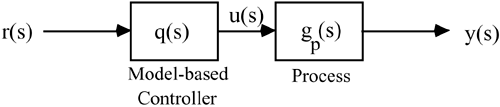 Using block diagram analysis, we find the following relationship between the setpoint and the output 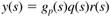 Static Control LawThe simplest controller will result if q(s) is a constant. Let kq represent this constant. As an example, consider a first-order process, gp(s) = kp/(tps + 1). Then the relationship between r(s) and y(s) is 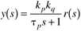 To obtain a desirable response, kq = 1/kp; offset will result otherwise. We can see this from the final-value theorem. Consider a step setpoint change, of magnitude R. 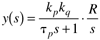 From the final-value theorem 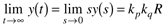 and for no offset, we require that kq = 1/kp. We can also find the time-domain solution to Equation (8.2) 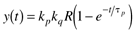 Again, we can see that kq = 1/kp is necessary for offset-free performance. Notice also that the speed of response is the same as the time constant of the open-loop process. In order to "speed up" the response, we must use a dynamic control law, as developed in the next section. Dynamic Control LawBetter control can be obtained if the controller, q(s), is dynamic rather than static. Indeed, we find that if 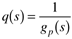 then the relationship between r(s) and y(s) is 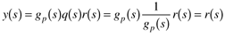 That is, we have perfect control, since the output perfectly tracks the setpoint! For a first-order process, the controller is 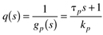 Although this is mathematically possible, perfect control is unachievable in practical application. Consider the signals in and out of the control block, shown in Figure 8-3. Since the transfer function relationship between r(s) and u(s) is, for this example, 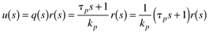 the differential equation that corresponds to Equation (8.4) is 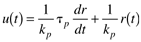 From a practical point of view, it is impossible to take an exact derivative of r(t), particularly if a discontinuous step setpoint change is made. Here we use the inverse Laplace transform to solve Equation (8.4) for u(t), when there is a step change in r. 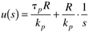 A table of Laplace transforms can be used to find the time-domain solution 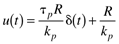 where d(t) is the impulse function, which has infinite height, infinitesimal width, and unit area. Since this is hard to understand conceptually, you probably realize that it is impossible to implement exactly. Think about how you would approximate it. The Bottom Line. Equation (8.4) is representative of a controller that is not physically realizable. Notice that the equation has a numerator polynomial, but not a denominator polynomial. We can state the following general result. Physical Realizability. For a controller to be physically realizable, the order of the denominator of the controller transfer function [q(s)] must be at least as great as the order of the numerator. Definition. A transfer function that satisfies this condition is proper. If the order of the denominator is greater than the order of the numerator, then the transfer function is strictly proper. If the order of the numerator is equal to the order of the denominator, then the transfer function is often called semiproper. |
| [ Team LiB ] |
|